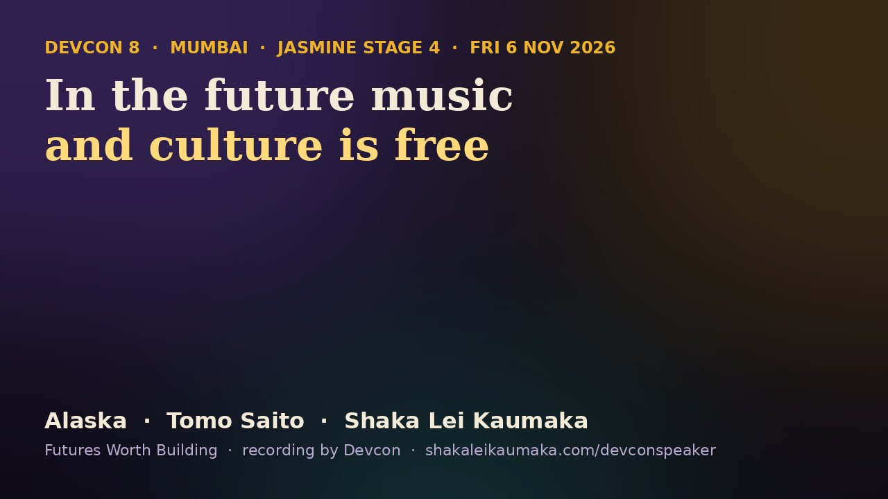

In the future music and culture is free
A Devcon 8 conversation with Alaska, Tomo Saito and Shaka Lei Kaumaka — on why culture is not a side quest for Ethereum.
▶ Watch the session

Recording published by Devcon · watch on YouTube · nothing from YouTube loads until you press play (youtube-nocookie).
What the session was about
The best parts of music culture have always been decentralized: scenes, pirate radio, DIY venues, labels, group chats, people passing records between each other because someone they trust said it mattered.
The problem is that the internet captured that energy and routed it through platforms. Artists get reach without power. Curators create value without ownership. Communities build culture inside systems that are designed to extract from them.
This chat is about a different path. Ethereum is not interesting here because music needs more crypto branding. It is interesting because music communities already understand the thing Ethereum is supposed to protect: shared infrastructure without a single owner, payments without unnecessary middlemen, and public memory that does not live inside one company’s database.
The walkaway is simple: culture is not a side quest for Ethereum. It is one of the clearest places to prove that decentralized infrastructure can matter in ordinary human life.
Session description from the Devcon 8 programme, written by the speakers (Alaska, Tomo Saito, Shaka Lei Kaumaka) and quoted with credit · archive.devcon.org
Shaka’s words from the stage
Being transcribed by the ʻohana. Shaka’s own words from this conversation will appear here in full, as quotes, credited “Shaka’s words” (CC BY-SA 4.0). Alaska’s and Tomo’s parts will be shown only as short context lines — the full transcript with their words will be added with their blessing.
Consent before people, always: if you spoke on that stage and want anything changed or removed, the takedown door is opensourceorchestra.org/takedown — takedown first, questions second.
Speaker history at Devcon
Stage talk + Music Sanctuary host
- In the future music and culture is free — with Alaska & Tomo Saito · Jasmine Stage 4 · Fri 6 Nov 2026 (this page)
- Open Source Orchestra Music Space — the accepted Devcon Improvement Proposal; the Music Sanctuary ran four days, 3–6 Nov 2026, about 35 artists, and the hall became the closing ceremony
Devcon Scholar · Chiva Lounge
- Chiva Lounge Opening w/ ETH Musicians DAPP — artist hosts Mateo, is.love and Shaka kick off the Devcon 6 music space
- SHAKA LOOP — Tue 11 Oct 2022 · 12:45 · 45 min · Opportunity & Global Impact track
- Ukulele Workshop — Tue 11 Oct 2022 · 13:45 · 75 min · twelve ukuleles to share and gift: “Todo es posible, even learning the ukulele”
- Open Source Jam — the first Open Source Orchestra DIP activated the Music Stage
Bogotá · Bangkok · Buenos Aires · Bombay
- The Devcon team said yes to every Open Source Orchestra proposal — Devcon VI Bogotá, Devcon SEA Bangkok, Devconnect Buenos Aires, Devcon 8 Mumbai
- Next on the road: Devcon IX Lisbon, 12–14 Oct 2027 — hoped for, not a promised slot
Book Shaka to speak or play
Talks, panels, workshops, open jams. Shaka speaks on music as public infrastructure, consent-first culture, agents and humans making music together, and the Open Source Orchestra — and he brings the ukulele. The orchestra is a free circle: there is no fee to join; gifts flow through open rails.
On X: @Shakaleikaumaka · @opensourceorch · the circle: opensourceorchestra.org · learn the songs: /learn